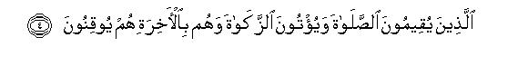

بسم الله الرحمن الرحيم
Sayyid Abul Ala Maududi - Tafhim al-Qur'an - The Meaning of the Qur'an
 31.
Surah Luqman
31.
Surah Luqman
The Surah has been named Luqman after Luqman the Sage, whose admonitions to his son have been related in vv. 12-19 of this Surah.
A perusal of the subject matter shows that it was sent down in the period when persecution to suppress and thwart the invitation to Islam had begun and every sort of machination had started being employed for the purpose. This is borne out by vv. 14-15, in which the young converts to Islam have been told that although the rights of the parents are the uppermost after God, they should not listen to them if they prevented them from accepting Islam, or compelled them to revert to the creed of shirk and polytheism. The same thing has been said in Surah Al-Ankabut, which indicates that both these Surahs were sent down in the same period. A study of the style and subject matter of the two Surahs on the whole, however, shows that Surah Luqman was sent down earlier, for one does not see any sign of the antagonism in its background though, contrary to this, while studying Surah Al-Ankabut one can clearly feel that the Muslims were being severely persecuted during the period of its revelation.
In this Surah the people have been made to understand the meaninglessness and absurdity of shirk and the truth and reasonableness of Tauhid, and they have been invited to give up blind imitation of their forefathers, consider with a cool mind the teachings which the Prophet Muhammad (upon whom be Allah's peace and blessings) is presenting from the Lord of the worlds, and see with open eyes the manifest Signs found in the universe around them and in their own selves, which bear evidence to its truth.
In this connection, it has also been pointed out that this is not a new teaching which might have been, presented in the world, or in the land of Arabia, for the first time, and with which the people might be unfamiliar. The learned and wise people of the past ages said and taught the same thing which Muhammad (upon whom be Allah's peace) is teaching today. It is as if to say, "O people! In your own country there has lived a wise man, named Luqman, whose wisdom has been well known among you, whose proverbs and wise sayings are cited in your daily conversation and who is often quoted by your poets and orators. Now you should see for yourselves what creed and what morals he used to teach."

In the name of Allah, the Compassionate, the Merciful.

[1-5] Alif. Lam. Mim. These are the verses of the wise Book,1 a Guidance and Mercy for the righteous people2 who establish the Salat. pay the Zakat and fully believe in the Hereafter.3 They are the ones who are on the right path enjoined by their Lord, and they are the ones who will attain true success.4
[6-9] And there is among the men such a one also,5 who buys alluring tales6 so that he may lead the people astray from Allah's Way, without any knowledge,7 and make a mockery of the invitation to it.8 For such people there is a disgraceful torment.9 When Our Revelations are recited to huh, he turns his face away disdainfully as though he did not hear theta, as though his ears were deaf. Well, give him the good news of a painful torment. However, for those who believe and do good works, there are blissful Gardens10 wherein they shall live for ever. This is a true promise of Allah: He is the All-Mighty, the All-Wise.11
[10-11] He12 created the heavens without pillars that you could see.13 He set mountains in the earth lest it should tilt away along with you.14 He scattered all kinds of animals in the earth, and sent down rainwater froth the sky and caused a variety of bounteous vegetation to grow in it. This is Allah's creation: now, show Me what have these others created?15 The fact is that these wicked people are involved in manifest error.16
[12] We17 had bestowed wisdom on Luqman that he may be grateful to Allah.18 Whoever is grateful, his gratefulness is for his own good, and whoever is ungrateful, then Allah is indeed Self-Sufficient and Self-Praiseworthy.19
[13] Remember the time when Luqman was admonishing his son, saying, "My son, join not another as an associate with God:20 the truth is that joining associates (with God) is a grave iniquity."21
[14-15] And22 the fact is that We have Ourself enjoined on man to recognize the rights of his parents: his mother bore him in her womb with weakness upon weakness and his weaning took two years.23 (That is why We admonished him to the effect: ) "Give thanks to me and to your parents: to Me you have to return. But if they press you to join with Me another about whom you have no knowledge,24 do not obey them at all. Treat them kindly in the world, but follow the way of him who has turned to Me. Then to Me will all of you return;25 then I shall tell you what you had been doing.26

[16-19] (And Luqman27 had said:) "My son, even if a thing be equal to a grain of mustard seed and hidden in a rock, or in the heavens, or in the earth, Allah will bring it forth.28 He is Knower of subtleties and is All-Aware. O my son. establish the Salat, enjoin good, forbid evil and bear with fortitude every affliction that befalls you.29 These are the things which have been strictly enjoined.30 And do not speak to the people with your face turned away,31 nor walk proudly. on the earth, for Allah does not love any self-conceited, boastful person.32 Be moderate in your gait,33 and lower your voice, for the most disagreeable of all voices is the braying of the asses."34
[20-21] Do you not see that Allah has subjected to you whatever is in the earth and the heavens,35 and has bestowed on you all His favors, visible as well as invisible?36 Yet there are some among the people who wrangle about Allah,37 without any knowledge, or guidance, or an enlightening Book.38 And when it is said to them, "Follow what Allah has sent down," they say, "We shall only follow that upon which we found our forefathers." What! Will they still be following them even if Satan had been calling them to the raging Fire?39
[22-24] Whoever surrenders himself to Allah,40 and is a doer of good,41 he has indeed taken hold of a reliable support42 and the ultimate disposal of all affairs is in the hand of Allah. As for the one who disbelieves, let not his disbelief grieve you.43 To Us they have to return; then We shall tell them what they had been doing. Most surely Allah knows the hidden secrets of the breasts. We are allowing them to enjoy themselves for a while in the world; then We shall drag them to a severe torment in a helpless condition.
[25-26] If you ask them, "Who has created the earth and the heavens?" they will surely say, "Allah." Say, "Praise is then only for Allah,"44 but most of them do not know.45 Whatever is in the heavens and the earth, is Allah's.46 Indeed, Allah is self-Sufficient and Self Praiseworthy.47
[27-28] If all the trees in the earth were to become pens and the ocean (an ink pot) which is replenished with ink by seven more oceans, (the writing of) Allah's Words would trot exhaust.48 Allah is indeed All-Mighty and All-Wise. Your creation and your resurrection are as simple for Him as (the creation and resurrection) of a single soul. The fact is that Allah hears everything and sees everything.49
[29-30] Do you not see that Allah causes the night to pass into the day and the day into the night? He has subjected the sun and the moon,50 each voyaging (in its course) till an appointed time.51 And (do you not know) that Allah is aware of whatever you do? This is because Allah is the very Truth,52 and all those whom the people invoke instead of Allah, are false,53 and (this is because) Allah alone is the High, the Great.54
[31-32] Do you not see that the ship sails in the sea by Allah's grace so that he may show you some of His Signs?55 Indeed, there are many signs in this for every patient and, grateful person.56 And when a wave ( in the sea) covers them like the mountains, they invoke Allah making their faith pure for Him alone. Then, when He brings theta safe to the land, some one among them follows the middle ways57 and does not deny Our Signs except the one who is treacherous and ungrateful.58
[33] O people! Avoid the wrath of your Lord and fear the Day when no father shall avail anything for his son, nor shall any son avail anything for his fathers59 Allah's promise is surely true.60 So let not this world' life deceive you,61 nor let the deceiver deceive you concerning Allah.62
[34] Allah alone has the knowledge of the Hour: He alone sends down the rain and He alone knows what is taking shape in the wombs of the mothers. No living being knows what he will earn the next day, nor does anybody know in what land he will die. Allah alone is All-Knowing, All-Aware.63
1That is, "verses of the Book which is full of wisdom and whose every teaching is based on wisdom."
2That is, "These verses give guidance to the Right Way and have been sent down as a mercy from God. But the people who can profit by this mercy and guidance are only those who adopt a righteous attitude, who wish to become good, who crave for their own well-being, whose quality is that they avoid the evil when they are warned of it, and follow the good when they are shown the ways to it. As for the wicked and mischievous people, they will neither profit by this guidance nor receive any share from this mercy. "
3It does not mean that "the righteous people" bear only these three qualities. By using the common epithet of "righteous" for them, it has been pointed out that they refrain from all those evils which this Book forbids and practice all those good things which this Book enjoins. Then, the three qualities of the "righteous" have been especially mentioned in order to show that all other good acts depend on these three things. They establish the Salat which engenders God-worship and piety as a permanent habit with them; they pay the Zakat which strengthens the spirit of sacrifice in them, subdues the love of the world and arouses a desire for the goodwill of Allah; and they believe in the Hereafter, which instills the sense of responsibility and answerability, which does not allow them to live like an animal, which is free to graze at will in the pasture, but like a man who is fully conscious of the fact that he is not independent but the slave of a Master before Whom he is answerable for all his activities of life. Owing to these three qualities, these "righteous" people are not the kind of the righteous persons who happen to do good just by chance, who may commit evil as often and as freely as they would do good. Contrary to this, these qualities inculcate in them an enduring system of thought and morality owing to which goodness issues forth from them in a regulated and systematic manner, and the evil, if at all committed, is committed just by chance. They do not have any deep-rooted motives, which might be arising from their own system of thought and morality and leading them on to the evil way under their own nature impulse.
4At the time when these verses were sent down, the disbelieves of Makkah thought, and said so openly, that Muhammad (upon whom be Allah's peace) and those who accepted his message were wasting and ruining their lives. Therefore, it was rejoined with full force and emphasis: "..these are the ones who will attain true success." That is, 'They will not ruin themselves as you seem to dunk in your ignorance, but they in fact are the ones who alone will attain true success, and the utter failures will be those who have refused to adopt this way."
Here the one who regards 'true success" as confined to the world, in the sense of material prosperity, will be wholly missing the Qur'anic concept of it. To understand the real concept of the true success one should study the following verses of the Qur'an along with the relevant E.N.'s: AI-Baqarah: 2-5, AI-'Imran: 102, 130, 200, AI-Ma'idah: 35, 90, AI-An'am: 21, AI-A'raf; 7, 8, 157, At-Taubah: 88, Yunus: 17, An-Nahl: 116, Al-Hajj: 77, Al-Mu'minun: 117, An-Nur: ,51, Ar-Rum: 38.
5That is, "On the one hand, there is this Mercy and Guidance sent down by Allah, of which some people arc taking full advantage, and on the other, there are also some unfortunate people living side by side with the fortunate ones, who are adopting this sort of attitude as against the Revelations of Allah. "
6The words lahv al-hadith in the Text imply such a thing as may allure and absorb a listener completely and make him heedless of everything else around him. Lexically, there is nothing derogatory in these words, but in custom and usage they apply to evil and useless and vain things, such as gossip, nonsensical talk, joking and jesting, legends and tales, singing and merry-making, etc.
"To buy" alluring tales may also mean that the person concerned adopts falsehood instead of the Truth, turns away from the guidance and turns to those things which can neither benefit him in the world nor in the Hereafter. But this is the metaphorical meaning. The real meaning of the sentence is that a person should purchase an absurd and useless thing for his money, and this is supported by many traditions. Ibn Hisham has related on the authority of Ibn Ishaq that when the disbelievers of Makkah could not stop the message of the Holy Prophet from spreading in spite of their best efforts, Nadr bin Harith said to the people of Quraish: "The way you are counteracting this man will avail you nothing. He has lived a lifetime among you. Until now he was the best of your men morally: he was the most truthful and the most trustworthy person among you. Now you say that he is a sorcerer and enchanter and a poet and a madman. Who will believe all this? Don't the people know the way the sorcerers talk? Don't they know the enchanters and the way they conduct their business? Are they unaware of poetry and of. the states of madness? Which of these accusations sticks to Muhammad (upon whom be Allah's peace) by exploiting which you would turn the people's attention away from him? Look! I will tell you how to deal with him." Then he left Makkah for Iraq and managed to get from there legends and tales about the kings of Iran and Rustam and Isfandyar and started to arrange tale-telling parties to distract the people from the Qur'an and to absorb them in the tales. (Ibn Hisham. vol. I, pp. 320-321). The same tradition has been cited by Vahidi in Asbab un Nazul on the authority of Kalbi and Muqatil. And according to Ibn 'Abbas, Nadr had bough singing girls also for the purpose. Whenever he heard that someone was coming under the Holy Prophet's influence, he would impose a singing girl an him with the instruction: "Feed him and entertain him with your songs so that he is absorbed in you and distracted from the other side." This was the same device which the arch-criminals of the nations have been employing in every age. They try to get the common people so absorbed in fun and sport and musical entertainment's in the name of culture that they are left with no time and sense to attend to the serious problems of life, and in their heedlessness they do not even feel what destruction they are being driven to.
The same commentary of lahv al-hadith has been reported from a large number of the Companions and their immediate followers. 'Abdullah bin Mas'ud was asked, 'What does lahv al-hadith mean in this verse ?" He said thrice emphatically. 'By God! it means singing." (Ibn Jarir, Ibn Abi Shaibah. Hakim, Baihaqi). Similar traditions have been reported from scholars like 'Abdullah bin' Abbas, Jabir bin 'Abdullah, Mujahid, 'Ikrimah, Said bin Jubair, Hasan Basri: and Makhul. Ibn Jarir, Ibn Abi Hatim and Tirmidhi have related on the authority of Hadrat Abu Umamah Baheli that the Holy Prophet said, "It is not lawful to buy and sell and trade in singing girls nor is it lawful to take their price." In another tradition, the last sentence is to the effect: ... it is unlawful to eat their price" . Yet another tradition from Abu Umamah is to the effect: To teach music to slave-girls and to trade in them is not lawful and their price is forbidden." AII these Ahadith also elucidate that the verse containing lahv al-hadith was sent down in this very connection. Qadi Abu Bakr Ibn al-'Arabi has related in the Ahkam alQur'an a Hadith from Hadrat 'Abdullah bin Mubarak and Imam Malik on the authority of Hadrat Anas, saying, that the Holy Prophet said: 'He who hears the song of a singing-girl in a musical concert, will have molten lead poured into his ear on the Day of Judgment" (In this connection, one should also note that the culture" of music in those days flourished almost entirely through the slave-girls: Free women had not yet become "artists" . That is why the Holy Prophet spoke about trading in slave-girls, and described their wages and earnings as their price. and used the word qaynah for the singing-girl, which is specifically used for a slave-girl in Arabic).
7"Without any knowledge" may be connected with "buys" and also "lead...astray". In the first case, it would mean: 'The ignorant foolish person buys this alluring thing and does not know that he is buying a ruinous thing at the cost of a highly valuable thing. On the one hand, there are the Divine verses which are full of wisdom and guidance, which he can obtain without any cost, but he turns away from them. On the other, there are these absurd things, which are disastrous for his morals and he is expending his wealth to obtain them. " In the second case, it would mean: "He has come out to guide the people without any knowledge: he does not know what burden of sin he is taking on himself by trying to lead the people astray from Allah's Way."
8That is, This person wants to make fun of the Divine Revelations by alluring and absorbing the people in legends and tales and music. He intends that the invitation of the Qur'an should be derided and ridiculed and laughed away. He plans to fight the Religion of God with the strategy that as soon as Muhammad (upon whom be Allah's peace) should come out to recite Revelations of God to the people, there should be a charming, sweet-voiced damsel giving her performance in a musical concert. on the one hand, and a glib-tongued story teller telling tales and legends of Iran, on the other, and the people should become so absorbed in these cultural activities" that they may not be in a mood to hear anything about God and the morals and the Hereafter."
9This punishment will be in accordance with their crime. They want to debase and disgrace God's Religion, His Revelations and His Messenger; God will rake His vengeance on them by giving them a disgraceful torment.
10Instead of saying 'There are blessings of Paradise (Gardens) for them," it has been said, there are blissful Gardens for them." In the first case, it would have meant this: "They will enjoy the blessings but the Gardens will not belong to them." In the second case, it automatically becomes evident that the whole Gardens will be handed over to them, and they will take advantage of their blessings as an owner does of his own possession, and not like the one who is allowed to use something without giving him ownership rights over it."
11That is, "Nothing can withhold Him from fulfilling His promise, and whatever He does, He does strictly according to the demands of wisdom and justice. The object of mentioning these two attributes of Allah after saying: This 'is a true promise of Allah", is to stress that Allah neither violates His promise willfully nor is there in this universe any such power as can prevent Him from fulfilling His promise. Therefore, there can be no chance that one may not receive what Allah has promised to give as a reward for faith and righteous deeds. Moreover, Allah's open promise to bestow this reward is wholly based on His wisdom and His justice. He does not misjudge: it cannot be that He may deprive a deserving person of his reward, and reward a non-deserving one instead. The people characterized by taste faith and righteous deeds indeed deserve this reward and Allah will bestow this on them only."
12After the above introductory sentence, the discourse now turns to the real theme, i.e.., the refutation of shirk and the invitation to Tauhid.
13The actual words bi -ghair i amad-in tarauna-ha in the Text may have two meanings:
(1) "You can see for yourself that they stand without pillar"; and
(2) 'they stand on the pillars which you cannot see"
Ibn 'Abbas and Mujahid have favored the second meaning, and many other commentators take the first meaning. If the meaning is expressed in terms of the natural sciences of the present day, it can be said that the countless stars and planets in the heaven have been established in their positions and orbits without any visible support and prop: there are no strings and wires which might have tied them together; there are no iron bars which might be withholding them from falling on one another. It is the law of gravitation which is supporting the system. This interpretation is according to the present-day knowledge. It may be that tomorrow some new addition to our knowledge enables us to interpret the reality better.
14For explanation, see E. N . 12 of Surah An-Nahl .
15"These others" 'the beings whom you have set up as your deities, whom you regard as makers and un-makers of your destinies, whom you have been worshiping as such persistently"
16That is, "When they do not point out in this universe any creation of anyone else than Allah, and obviously they cannot, their setting up the non creators as associates in Godhead and bowing before them in worship and invoking them for help, is nothing but mere stupidity, because their foolish conduct cannot be explained in any other way. Unless a person has taken leave of his senses he cannot commit the folly that he should himself admit before you that his deities are non-creators and that Allah alone is the Creator, and yet insist on their being the deities. If somebody has a little of the common sense, he will inevitably think how the one who has no power to create anything, and who has no share whatever in the creation of anything in the earth and heavens, can be our deity. Why should man bow before it and adore it as a deity? Does it possess any power that it could fulfill one's needs and requirements? Even if it hears one's prayers, whet could it do to answer them when it did not have any power to create anything? For, evidently, afflictions can be removed only by him who can create something and not by him who can create nothing."
17After presenting a rational argument to refute shirk the Arabs arc being told that this rational point of view is not being presented before them for the first time, but the wise and learned people before them also have been saying the same thing, including their own famous sage, Luqman. Therefore, they cannot refute the Holy Prophet's message, saying, "If shirk was an irrational creed, why didn't it strike so to somebody else before?"
Luqman was well known as a wise and learned man in Arabia. He has been mentioned in the poetry of the pre-Islamic poets like Imra'ul-Qais, Labid, A'asha, Tarafa and others. Some educated Arabs also possessed a collection of the wise sayings of Luqman. According to traditions, three years before the Hijrah the very first person of Madinah to be influenced by the Holy Prophet was Suwaid bin Samit. He went to Makkah for Hajj. There the Holy Prophet was as usual preaching Islam to the pilgrims coming from different places, at their residences. When Suwaid heard his speech, he submitted, "I have also got a thing similar to what you preach," When the Holy Prophet asked what it was, he said, "The roll of Luqman." Then on the Holy Prophet's instance, he read out a portion of it, whereupon the Holy Prophet said, "This discourse is fine, but that which I have is better still.' Then he recited the Qur'an to him, and Suwaid admitted that that was certainly better than the wisdom of Luqman. (Ibn Hisham, vol. II, p. 3781. According to the historians, this person (Suwaid bin Samit) was known by the title of Kamil (Perfect) in Madinah on account of his ability, bravery, nobility and poetry. Bet when after his meeting with the Holy Prophet he returned to Madinah. He was killed in the battle of Bu'ath, which was fought some time afterwards. His tribesmen were of the opinion that he had become a Muslim after his meeting with the Holy Prophet
Historically. Luqman is a disputed personage. In the dark centuries of ignorance there was no compiled history. The only source of information were the traditions that were being handed down since centuries. According to these, some people thought that Luqman belonged to the people of 'Ad and was a king of Yaman. Relying on these traditions, Maulana Sayyid Suleman Nadvi has expressed the opinion in the Ard al-Qar'an that Luqman was a descendent of the believers who remained safe with the Prophet Hud after the destruction of the people of 'Ad by a Divine torment, and he was one of the kings of Yaman when it was ruled by the 'Ad. But other traditions which have been reported from sane learned Companions and their immediate followers do not support this view. Ibn 'Abbas says Luqman was a negro slave, and the same is the opinion of Hadrat Abu Hurairah, Mujahid, 'Ikrimah and Khalid ar-Rabi. According to Hadrat Jabir bin'Abdullah Ansari, he belonged to Nirbah. S'id bin al-Musayyib says that Ire was an Egyptian negro. These three sayings closely resemble one another. The Arabs generally called the black people negroes (Habashis) in those days, and Nirbah is the country south of Egypt and north of Sudan. Therefore, calling the same person an Egyptian and a Nubian and a negro, in spite of the difference in words. is one and the same thing. Then the elucidations made by Suhayli in Raud al-Unuf nd Mas'udi in Muruj adh-Dhahab also throw some light on the question as to how the wisdom of this Sudanese slave spread in Arabia. They both agree that this person though originally a Nubian was an inhabitant of Madyan and Aylah (modern, 'Aqabah). That is why he spoke Arabic and his wisdom spread in Arabia. Besides, Suhayli also elucidates that Luqman the Sage and Luqman bin 'Ad were two different persons, and it is not correct to regard them as one and the same man. (Raud al-Unuf, vol. I, p. 266; Mas'udi, vol. I, p. 57).
Another thing may also be made clear here. The Arabic manuscript from the Library of Paris, which the orintalist Derenbourg has published under the title Amthal Luqman Hakim (Fables De Luqman Le Sage) is a fabricated thing which has nothing to do with the Roll of Luqman. These Fables were compiled by somebody in the 13th century A.D. Its Arabic is poor, and a perusal shows that it is, in fact, a translation of some other book in a different language, which the author or translator has himself ascribed to Luqman the Sage. The orientalists make such researches with a special object in view. They bang out such forged and fake things in order to prove that the narratives of the Quran are unhistorical legends and therefore unreliable. Anyone who reads B. Helle's article on 'Luqman" in the Encyclopeadia of Islam will not fail to understand the real motive of these people.
18That is, "The very first demand of the wisdom and knowledge, insight and sagacity, granted by Allah was that man should have adopted the attitude of gratefulness and obedience before his Lord, and not of ingratitude and thanklessness. And this gratefulness should not have merely been lip-service but expressed and translated in thought and word and deed. One should have the conviction in the depths of one's heart and mind that whatever one has got, has been given by God. One's tongue should always be acknowledging the favors of God; and practically also one should be trying to prove by carrying out His Commands, by avoiding sins, by striving to achieve His good-will, by conveying His blessings and favors to His servants and by fighting those who have rebelled against Him that one is really a grateful servant of one's God."
19That is,"The one who is ungrateful and unbelieving, his unbelief is harmful to his own self. Allah does not lose anything. He is Independent and does not stand in need of anyone's gratitude. The gratitude of someone does not add anything to His Godhead, nor does anyone's ingratitude and disbelief change the factual reality that whatever the servants have got, has been granted by Him. He is Self-Praiseworthy whether someone praises Him or not. Every particle in the universe bears testimony to His Perfection and Beauty, His Creativity and Providence, and every creature is paying homage to His glory perpetually."
20This particular admonition from the wisdom of Luqman has been cited here for two reasons: (1) He gave this admonition to his son, and obviously, no one can be insincere to one's own children. A person may deceive others, may behave hypocritically towards them, but no one, not even a most depraved person, will try to deceive and defraud his own children. Therefore, Luqman's admonishing his son thus is a clear proof of the fact that in his sight shirk was indeed the most heinous sin, and for that very reason he first admonished his dear son to refrain from this iniquity. (2) The second reason for this narration is that many parents from among the disbelievers of Makkah were compelling their children to turn away from the message of Tauhid being preached by the Holy Prophet Muhammad (upon whom be Allah's peace) and remain steadfast on the creed of shirk, as is being stated in the following verses. Therefore, those foolish people are being told, as if to say, The well-known sage of your own land had wished his children well by admonishing thetas to avoid shirk, now you should judge it for yourself whether you are wishing your children well or ill when you compel them to follow the same creed of shirk."
21Zulm means to deprive someone of his right and to act unjustly. Shirk is a grave iniquity because man sets up such beings as equals with his Creator and Providence and Benefactor as have no share whatever in creating him, nor in providing for him, nor in bestowing the blessings on him, which he is enjoying in the world. There could be no greater injustice than this. The Creator's right on man is that he should worship Him alone, but he worships others and so deprives Him of His right. Then, in whatever he does in connection with the worship of others than Allah, he exploits many things, from his own mind and body to the earth and heavens, whereas, all these things have been created by Allah, the One. and man has no right to use any of them in the worship of any other than Allah Then, the right of man's own self on him is that he should not debase and involve it in punishment. But when he worships others than his Creator. he debases his self as well as makes it deserving of the punishment. Thus, the entire life of a mushrik becomes Zulm in every aspect and at all times and his every breath becomes an expression of injustice and iniquity.
22The whole passage from lure to the end of the paragraph is a parenthesis, which Allah has inserted as a further explanation of the saying of Luqman.
23From these words, Imam Shafe'i, Imam Ahmad, Imam Abu Yusuf. and Imam Muhammad have drawn the conclusion that the suckling period of the child is two years. If a child has been suckled by a woman within this period, they will be forbidden for each other, but if outside and beyond this period, they will not be so. A saying of Imam Malik also supports this. But Imam Abu Hanifah has proposed the period of two and a half years as a precaution, and has added that it' the child has been weaned after two years, or even earlier, and it is no longer dependent upon suckling for its food, no woman would be forbidden for him If she gave him suck after that period, However, if the real food of the child is still milk. suckling during the period will render him and her forbidden for each other in spite of his eating the other food in a more or less quantity. For, the verse does not mean that the child should be suckled necessarily for two years. In Surah AI Baqarah it has been said: 'The mothers shall suckle their children for two whole years, if the fathers desire the suckling to be completed." (v. 233). Ibn 'Abbas from these words has concluded, and other scholars have agreed with him in this, that the shortest period of pregnancy is six months, for the Qur'an at another place says: "His bearing (in the womb) and his weaning took thirty months." (Ahqaf: 15) This is an important legal point which helps resolve many disputes concerning legitimate and illegitimate births.
24That is, "About wham you have no knowledge that he is My associate."
25"All of you": the children as well as the parents.
26For explanation, see E. N.'s 11 and 12 of Surah Al-'Ankabut.
27The other admonitions of Luqman are being narrated here to imply that like the basic beliefs, the teachings pertaining to morals that the Holy Prophet is presenting, are not anything new in Arabia.
28That is, "Nothing can escape Allah's knowledge and His grasp. A seed in the rock may be hidden for you, but it is known to Allah. A particle in the heavens may be very distant for you, but for Allah it is very near. A thing lying in the layers of the earth may be lying in darkness for you but for him it is in full light. Therefore, you cannot do anything good or bad, anywhere or any time, which may remain hidden from Allah. He is not only aware of it, but when the time for accountability comes, He will place before you a full record of each act of yours. "
29In this there is a subtle allusion to this that whoever will enjoin good and forbid evil, will inevitably have to face and undergo afflictions and hardships in the world.
30Another meaning can be: "These are things which require courage and resolution. To rise for the reformation of the people and to brave the hardships of the way cannot 1>e the job of a mean-spirited and cowardly person."
31Tusa'ir in the original is from se 'ar. a disease in the camel's neck clue to which it keeps its face turned to one side. The idiom implies the attitude of a person who shows arrogance and vanity, turns his face away and treats others with scant respect.
32Mukhtal in the original implies a person who has an over-high opinion of himself, and fakhur is the one who boasts of his superiority over others. A man becomes haughty and arrogant and vain in his gait only when he is puffed up with pride, and wants that others should feel his superiority.
33According to some commentators it means this: 'Walk neither fast nor slow but at a moderate pace :" but the context shows that here the pace or the rate of walking is not the question. There is nothing morally wrong with a fast or a slow pace in itself, nor can there be a rule made for it. When a man is in a hurry. he has to walk fast, and there is nothing wrong if one walks slow when walking for pleasure. Even if there is a standard for the moderate pace, it cannot be made a law for every person at all times. What is actually meant by this is to reform the state of the self under which a person walks haughtily. The haughtiness and arrogance of a person inevitably manifests itself in his gait and style of walking, which shows the state of his mind and also the cause of his pride and haughtiness. Wealth, authority, beauty. knowledge, power and such other things cause a man to became proud and vain, and each of these gives him a special style of gait. Contrary to this, manifestation of humility in the gait is also the result of one or the other morbid mental state. Sometimes the hidden conceit of the self of a man takes on the form of ostentatious humility, piety and godliness and this is shown by his gait; and sometimes man really feels so embittered by the frustrations of the world that he adopts a sick man's gait. What Luqman means to say is this: "Avoid these states of the mind and self and walk the gait of a simple, honest and noble person, which neither shows any vanity and haughtiness nor weakness nor ostentatious piety and humility."
The taste of the Holy Prophet's great Companions in this regard can be judged from a few instances. When Hadrat Umar once saw a man walking with his head hung down, he shouted out to him, saying, "walk with your head raised up. Islam is not sick. "He saw another person walking like a weak, sick man, and said, wretch! Do not sully our religion! " Both these incidents show that in the sight of Hadrat 'Umar religious piety did not at all require that one should walk cautiously. like the sick man and show undue humility by one's gait. Whenever he saw a Muslim walking such a gait, he would have the apprehension that it would misrepresent Islam and would depress the other Muslims. A similar incident was once met with by Hadrat 'A'ishah. She saw a person walking as if run down and exhausted. She asked what was the matter. It was said, 'He is one of the reciters of the Qur'an (i e a person who remains engaged in reciting and teaching the Qur'an and in worship)." At this she said, 'Umar was the chief of the reciters of the Qur'an, but as it was he would walk with a firm foot, and he would speak with force and strength, and he would give a good beating if he had to." (For further explanation. see E.N. 43 of Bani Isra'il and E.N. 79 of AI-Furqan).
34This does not mean that one should always speak in a low voice and should never raise one's voice. By citing the braying of the asses, it has been clearly indicated what son of the tone and voice in speech is meant to be discouraged. One kind of lowness and loudness"roughness and softness, of the rove and voice is that which is needed under natural and genuine requirements. For example, when speaking to a man close at hand, or to a small group of the people, one would speak in a low voice, and when speaking to a man at a distance or to a large number of the people, one would inevitably have to speak loudly. Similar is inevitably the difference in tones depending on the occasion and situation. The tone of praise has to be different from the tone of condemnation. and of the expression of goodwill from that of indignation. This thing is in no way objectionable. Nor does the admonition of Luqman imply that one should always speak in a soft and low voice and tone regardless of the occasion and requirement. What is objectionable is that one should shout oneself hoarse and produce a voice like the ass's braying in order to bully and debase and browbeat the other person."
35A thing can be subjected to somebody in two ways:
(1) The thing may be made subordinate to him and he may be authorized to use and exploit it as he likes, and
(2) the thing may be subjected to a law and system so that it becomes useful for him and serves his interests accordingly. Allah has not subjected everything in the earth and heavens to man in one and the same sense, but has subjected certain things in the first sense and certain others in the second sense. For example, He has subjected the air, water, earth, fire, vegetation, minerals, cattle and many other things in the first sense, and the sun, the moon, etc. in the second sense.
36"Visible favors" imply those favors which are perceived by man in one way or the other, or arc known to him. And the "invisible favors" arc those which are neither perceived by him nor arc known to him. There are countless things in mans own body and in the world outside him, which are working in his interest, but man is utterly unaware of the means which his Creator has provided for his protection and safety, for his development and provision of sustenance to him, and for his well-being and happiness. Research of man in the different branches of science is revealing many such favors of God as were hidden from him before. And the favors and blessings which have so far been revealed are insignificant as against those which still lie hidden froth man.
37“Who wrangle about Allah": Who wrangle and dispute aborts questions such as these: Does Allah exist or not? Is He One God alone, or are there other gods also? What are His attributes and what is their nature? What is the nature of His relationship with His creations etc.?
38That is, `They neither have any means of knowledge by which they might themselves have observed or experienced the reality directly, nor do they have the guidance of a guide available to them, who might have guided them after observing the reality, nor do they possess a Divine Book, which might be the basis of their belief."
39That is, It is not at all necessary that the forefathers of every person and every family and nation should have been on the right path. The mere argument that a particular way of life had been bequeathed by the elders cannot be a proof of its being right also. No sane person can commit the folly that he should blindly go on following the way of his forefathers even if they were not rightly guided, and should never bother to find out where the way is leading him."
40"Whoever........Allah": Who submits himself wholly to the service of Allah, entrusts all his affairs to Him and makes His Guidance the law of his entire life.
41That is, practically also he should adopt the attitude of an obedient servant of Allah.
42That is, He will neither have the apprehension that he will be misguided, nor the fear that he will meet an evil end after having served Allah.
43This means to say, "O Prophet, the one who refuses to listen to you, thinks that by rejecting Islam and insisting on unbelief he has harmed you, but in fact he has not harmed you but harmed only himself. If he does not listen to you, you need not bother yourself about him at all. "
44That is, "Thank God that you at least know this and believe in this. But if this be the reality, all praise should then belong to Allah alone. How can any other being deserve praise when it has no share whatever in the creation of the universe?"
45That, is, Most of the people do not know what are the inevitable results and demands of accepting Allah as the Creator of the universe, and what contradicts it. When a person acknowledges Allah as the Creator of the earth and the heavens. He should also acknowledge that Allah alone is the Deity and Lord: that He alone is worthy of worship and obedience: that He alone can be invoked for needs, and no one other than He can be the Law-Giver and Ruler of His creation. To acknowledge one as the Creator and another as the deity is contrary to reason and a contradiction in terms, which can be upheld only by an ignorant person. Likewise, it would be a contradiction in terms to believe in one Being as the Creator and to regard another from among the creation as remover of hardships or as a deity and possessor of power and authority and sovereignty. which no reasonable will acknowledge and accept."
46That is, 'The reality is not merely this that Allah is the creator of the earth and the heavens, but in fact He alone is the Master of all things found in the earth and heavens. Allah has not created his universe and left it to others to become masters of the whole or a part of it, but He Himself is Master of His creation and everything that exists in this universe is His. Here. He alone possesses Divine rights and powers and no one else. "
47This has been explained in E. N. 19 above.
48"Allah's Words": Allah's creative works and the manifestations of His power and wisdom. This very theme has been presented in Surah AI-Kahf: l()<) above a little differently. A person might think there is exaggeration in this. but if one considers the matter a little deeply, one will feel that there is in tact no exaggeration whatever in it. AII the pens that can be made from the trees of the world and all the ink that can be provided by the oceans of the world, which are replenished by seven more oceans, cannot perhaps help prepare a complete list of all the creations in the universe, not to speak of all the manifestations of Allah's power and wisdom and creative works. When it is impossible even to count all the things found on the earth only, how can one bring into writing all the creations found in this limitless universe?
Here, the object is to make man realize that no creature can become a deity and an associate in the works of Allah. Who has brought into being such a vast Universe, Who is administering its affairs and Whose powers and resources are limitless. Not to speak of becoming an associate in the administration of this vast Kingdom, it is not within the power of any creation to obtain a mere nodding acquaintance with the minutest portion of it. How can then one imagine that one or the other creation can have any share in the Divine powers and authority on the basis of which it may answer prayers and make or un-make destinies?
49That is, 'He is hearing every sound in the universe distinctly at one and the same time, and no sound can absorb his hearing so completely that He may hear no other sound. Likewise, He is seeing the whole universe in each of its details as to thing and event at one and the same time and nothing can absorb His sight so completely that He may see nothing else. The same precisely is the case concerning the creation of men and their re-creation also. He can re-create instantaneously all the men who have been born since the beginning of the creation and will be born till the end of time, His creative power is not absorbed so completely in the creation of one man that He may be unable to create other men at the same time. For Him the creation of one man and of the billions of men. therefore, is equal and one and the same thing.
50That is, "The appearance and alternation of the day and night consistently and regularly by itself shows that the sun and the moon have been subjected to a system. " The sun and the moon have been mentioned here in particular because both these are the most prominent bodies of the heaven, which man has been worshiping as deities since the earliest times, and which many people worship as gods even today. The fact, however, is that Allah has bound all the stars and planets of the universe including the earth into an unalterable system from which they cannot deviate even by an inch.
51That is, nothing in the world, whether the sun or the moon, or any other star or planet, in the universe, is eternal and ever-lasting. Everything has a term for it and can function only till its expiry. Everything has a beginning in time before which it was not there and an end in time after which it will not be there. This means to imply that such temporal and powerless things cannot become the deities of men.
52That is, the real Sovereign is Allah. He alone is the real Owner of power and authority over the creation and its disposal.
53That is, "They are figments of your own imagination. You have yourselves presumed that so-and-so has got a share in Godhead, and so-and-so has been given the powers to remove hardships and fulfill needs, whereas in fact none of them has any power to make or un-make anything."
54That is, 'He is the Highest of all before Whom everything is low, and He is the Greatest of all before Whom everything is small."
55That is, "Such Signs as show that all powers rest only with Allah. Man may make as strong and suitable ships for his sea journeys as he likes, and may achieve whatever perfection in marine science and in the related knowledge and experience, these by themselves cannot avail him anything to perform safe voyages especially when confronted by the terrible forces at the sea, unless he is succored by the grace of Allah. As soon as Allah's grace is withdrawn, man immediately realizes how meager and insufficient are the means and resources and knowledge of the sciences. Similarly, man in the state of peace and security may be a hardened atheist or polytheist, but when his boat loses balance in the storm at sea, even the atheist comes to realize that there is God and the polytheist that there is only One God. "
56That is When the people who possess these two qualities, recognize the reality by these signs, they come to understand Tauhid clearly and stick to it firmly. The first quality is that they should be patient: they should not be fickle but fine and persistent: they should remain steadfast on the righteous belief under all circumstances, pleasant or unpleasant, difficult or easy, favorable or unfavorable. They should not have the weakness that when the hard times come they Stan imploring God humbly, and when they change into good times, they forget God altogether. Or that, to the contrary, they should worship God in good times and start cursing Him when touched by afflictions and misfortunes. The other quality is that they should be grateful: they should not prove ungrateful and thankless: but appreciative of favor and should remain perpetually disposed from within to render thanks to the one who conferred the favor."
57"Iqtisad" in the original may mean uprightness or moderateness. In the first case, the verse would mean: "A few of them only remain steadfast on Tauhid, which they had promised to follow when overwhelmed by the stone, and this makes them adhere to uprightness ever afterwards." If it is taken to mean moderateness, it would mean: Some of them become moderate and less rigid in their creed of atheism and polytheism, or they lose some of their fervor and enthusiasm that had been caused by the incident of calamity." Most probably Allah has used this meaningful sentence here in order to allude to all the three states simultaneously. The object probably is to point out the fact that during the storm at sea the mind of everybody is automatically set right, and everybody gives up atheism and polytheism and starts invoking One Allah for help. But as soon as they safely land on the shore, only a few of them seem to have learned any enduring lesson from their experience. Then, this small number also is divided into three groups: those who adopt uprightness ever afterwards, and those who become moderate in their disbelief, and Those who retain some of the spirit of enthusiasm caused temporarily by the calamity.
58These two qualities are the antithesis of the two qualities mentioned in the preceding verse. A treacherous person is he who is utterly disloyal and who has no regard for his promise and pledge, and the ungrateful he who does not acknowledge the good and the gains and the benefits received by him, and even behaves rebelliously towards his benefactor. The people having these qualities return to their disbelief, their atheism and their polytheism without any hesitation as soon as the danger has been averted. They do not admit that they had perceived some signs in their own selves as well as outside themselves of Allah's existence and of His being only One when overwhelmed by the stone, and their invoking Allah was in fact the result of their recognition of the same reality. The atheists among them explain away their act, saying, "It was a weakness which we manifested in the state of confusion and bewilderment, whereas there exists no God, Who might have saved us from the storm: we in fact succeeded in escaping by virtue of such and such a device and means and resources. " As for the mushriks, they generally say, "We had the succor and protection of such and such a saint or god and goddess available to us by virtue of which we escaped. " Therefore, as soon as they land on the shore, they start giving thanks to these false gods and presenting offerings at their shrines. They do not bother to think that when they had lost hope, there was none beside Allah, the One, whom they might have implored and invoked for help.
59That is, "The relationship of a person with his friend, or his leader, or his spiritual guide, etc. is not so close and intimate as the relationship that exists between the children and their parents. But on the Day of Resurrection even the son and the father will not be able to help each other. The father will not have the courage to come forward and say that he may be seized instead of the son for his sins, nor will the son have the nerve to say that he may be sent to Hell instead of the father. How can then a person expect that one will be able to avail something for the other there? Therefore, foolish is the person who spoils his Hereafter in the world for the sake of another, or adopts the way of sin and deviation by dependence on others. Here, one should keep in view the theme of verse 15, in which the children have been admonished not to accept deviation in the matter of the faith and religion on behest of the parents, though in affairs of mundane life they are duty bound to serve them as best as they can. "
60"Allah's promise" : the promise of Resurrection, when the Court of Allah will be established and everyone will be called to render an account of his deeds.
61The life of the world involves the people, who only see the superficial, in different kinds of misunderstandings. Someone thinks that life and death only belong to this world, and there is no life hereafter; therefore, whatever one has to do, one should do it here and now. Another one who is lost in his wealth and power and prosperity, forgets his death and gets involved in the foolish idea that his grandees and his power are everlasting. Another one overlooking the moral and spiritual objectives regards the material gains and pleasures in themselves as the only objectives and does not give anything any importance but the "standard of living", no matter whether his standard of humanity gas on falling lower and lower as a result thereof. Someone thinks that worldly prosperity is the real criterion of truth and falsehood: every way of life that ensures this is the truth and everything contradictory to it is falsehood. Someone regards this very prosperity as a sign of being Allah's favorite, and assumes the law that whoever is leading a prosperous life here is Allah's beloved no matter by what means he might have achieved this prosperity, and whoever is leading a miserable life in the world, even if it be so due to his love of the truth and his uprightness, will live a miserable life in the Hereafter, too. These and other such misunderstandings have been called "deceptions of the worldly life" by Allah.
62Al-gharur (the deceiver) may be Satan or a man or a group of then, or even man's own self, or something else. The reason for using this comprehensive and meaningful word in its absolute form without identifying a particular person or thing, is that for different people there are different means that cause them deception. Any particular means or cause that deceived a person to be misled and misguided from the right way to the wrong way, will be al-gharur in his particular Case.
"To deceive (someone) concerning Allah" are also comprehensive words, which include countless kinds of deceptions. "The deceiver" deceives one man with the idea that there is no God at all, and another man with the idea that God after making the world has handed over its control and administration to the men and is no more concerned with it; he misleads another one, saying, "There arc some favorite ones of God: if you attain nearness to them, you will surely win your forgiveness whatever you may do, or may have done, in the world; " he deceives another one, saying, "God is AII-Forgiving and All-Merciful: you may go on committing sins freely, and He will go on forgiving each sin of yours. " He gives another person the idea of determinism and misguides him, saying, "Everything that you do is pre-ordained: if you commit evil, it is God Who makes you commit it: if you avoid goodness, it is God Who makes you avoid it." Thus, there are countless kinds of such deceptions with which man is being deceived concerning God. When analyzed it comes to light that the basic cause of all errors and sins and crimes is that man has been deceived concerning God in one way or the other, and that is how he has been misled to some ideological deviation or moral error.
63This verse is, in fact an answer to the disbelievers' question as to when the Hour of Resurrection will come, which they asked when they heard the Holy Prophet mention it and the promise of the Hereafter, again and again. The Qur'an has answered this sometimes by citing the question and sometimes without citing it, because the addressees knew what they were asking. This is one of those verses which answer the question without citing the question itself.
The first sentence: 'Allah alone has the knowledge of the Hour", is the real answer to the question. The four sentences that follow constitute the argument to support it. The argument means this: "O man. you do not have the knowledge even about those things with which you are most closely and intimately concerned in life. How then can it be possible for you to know as to when will the whole world cane to an end? Your prosperity and adversity mainly depend on the rain. But its control and regulation is entirely in the hand of Allah. He sends down the rain whenever and wherever and in whatever measure He pleases and withholds it whenever he pleases. You do not at all know how much of the rain will fall at a particular place at a particular time and which land will remain without it, and which land will be adversely affected in spite of it. Your wives conceive by your own sperm-drop, which perpetuates your race in the future, but you do not know what is taking shape in their wombs, and in what form and with what good or evil it will emerge. You do not even know what you are going to meet with the next day A sudden accident can change your destiny; but you are unaware of it even a minute before its occurrence. You do not know where your present life will eventually cane to an end. Allah has kept all this information with Himself alone; and has not given you any knowledge of any of these. You actually desire that you should have the knowledge of each of these things so that you may make necessary preparations beforehand, but you have no other course open to you than to depend only on Allah's decree and disposal in these matters. Likewise, about the end of the world also there is no alternative but to rely on Allah's decree and decision. The knowledge of this also has neither been given to anybody, nor can it be given."
Here, another thing also should be understood well, and it is this: This verse does not give a list of the unseen and hidden things, which are known to no one but Allah. Here only some of the most apparent things have been pointed out only to serve as an illustration. These are the things with which man is most deeply and intimately concerned, yet he is unaware of them. From this it would be wrong to conclude that these are the only five unseen and hidden things which are known to no one but Allah. As a matter of fact, ghaib applies to every such thing which is hidden from the creation but is in the knowledge of Allah, and such things are countless and limitless. (For a detailed discussion of this, see An-Naml: 65 and the E.N.'s thereof).